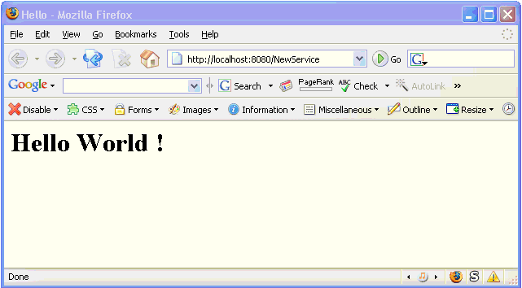

In this section, you will learn how to create simple programmed webServices.
In a programmed service, web pages are generated by a program,
as opposed to static pages or pages with embedded code.
Services with embedded Smalltalk code are described elsewhere -
take a look at the
STT overview,
examples and
browse the STT classes.
For a demonstration, start a webServer in the launcher's settings dialog,
and enable the STT service there.
Here, you will learn how pure programmed services are created and coded. In these, Smalltalk code is fully responsible both for the generation of html pages and to handle submitted forms.
and press the "Create new HTTP Server" button.
This will instantiate a new instance of the HTTPServer class
(but not yet start it, so HTTP requests are not yet served by this).
If the default Smalltalk server port (8080) is used,
a number of default demo services will also be automatically added initially
(see below on how these can be removed or others be added).
[...more info on how to configure FCGI to be added here...]
You may want to turn on the debug and trace check-boxes, to get some feedback on the servers actions on the transcript. Especially while developing a service, the debug option is very useful: if it is on, and an error occurs during request processing, a debugger will be entered. This allows for bugs to be fixed right from within the event-processing operation. If the flag is off, errors are cought by the servver, and a walkback information is sent back to the browser. If course, in a machine running unobserved on a server, you would not want debugviews to open up. So this flag should be off when going into production (look at www.exept.de, to see a concrete example of such a server in operation).
To test-talk to your server, open Firefox, IE or Opera, and enter "localhost:8080/" (or whatever port you used) as the URL. You should (at least) get an informal error response from it.
Pick some service, and add it by pressing the "Add Selected Service" button. (For the 8080 port, which is ST/X's standard port, you will notice that some services have already been added automatically by the settings application for you).
Notice, that every service is registered under a so-called "linkName".
This is the first component of the URL-path.
For example, if a service has been registered under a linkName of "foo",
the URL to get to this service in the webBrowser will be: "http://<yourHostName>:8080/foo".
You may want to play with the webServer for a few minutes, to see what is already provided and how the settings affect the service behavior. As a recommendation, make sure that at least the following services are up and running:
| WebHomePageForSTX | will respond under the "/" (i.e. root) linkname with an introduction and links to other running services. |
| HelloWorldService | will respond under the "/Hello" linkname with an obvious response. |
| WebDemoApp1 | a demo service showing some simple examples. This service is also able to present its own source code. |
| CommancheSTTService | a service which demonstrates embedded Smalltalk code (very similar to PHP) |
Also, play with the security and authentication settings.
Finally, change the replyRepresenter settings. A replyPresenter is a wrapper, which is able to wrap another services output and add a common decoration to it. This allows you to easily change the look of a services pages (i.e. background, colors, font and icons etc.), without even touching the service itself. For now, only an exept-presenter and a null-presenter are provided. To write your own, take any of them as a starting base.
Now, we are ready for the next step. Let us create our own web application...
In ST/X, web services are created as subclasses of HTTPService.
To make your life easier, the browser provides an extra menu item,
for the creation and initial definition of a web service class.
In the browser, select the 'New Web Application' item from the
class-list-menu,
and accept the resulting class definition template:
HTTPService subclass:#NewService
instanceVariableNames: ''
classVariableNames: ''
poolDictionaries: ''
category: 'WebApplications'
The required protocol for a webService (which has been already generated for you as templates by the browser) is:
linkName |
(class protocol) | specifies the default linkName. That name is used as default for the registration towards the webServer. The browser-generated code will return the classes name. |
process:aRequest |
(instance protocol) | the method invoked to process HTTP-requests. The browser-generated code will generate simple HTML for a "Hello World" message. |
"process:" method later,
to fit our needs.
When you send it a request from a web browser,
you should get the following response:

The argument to the "process:" message is a request object,
which contains all relevant information of the http-request.
For example, the requesting host,
the URL, any authentication information etc. are found there.
To get familiar with it, place a "self halt"
into the "process:" method (or put a breakpoint on it),
and invoke it by sending a request from your web browser.
From within the debugger, inspect the request object and/or browse its class.
One special item of the request object is the response-object.
This is an object, which collects the generated HTML for the response.
It understands the write-stream protocol, so you can generate HTML as simply
as if you would write it to a file.
Initially, at the entry of your "process:"-method, the response object
is empty (so, if you never write anything to it, the web browser will get an empty response).
"process:"-method,
to return some more information about the request (the text below can be copied with a right-click):
process:aRequest
"This is the web applications main processing method.
It will be invoked for every incoming webBrowser-request.
The argument, aRequest contains the parameters (url, fields, parameters etc.)."
|response|
response := aRequest response.
response nextPutLine:'<HTML>'.
response nextPutLine:' <HEAD>'.
response nextPutLine:' <TITLE>Hello</TITLE>'.
response nextPutLine:' </HEAD>'.
response nextPutLine:' <BODY>'.
response nextPutLine:' <H1>Hello World !</H1>'.
response nextPutLine:' The URL was: "', aRequest url ,'"'.
response nextPutLine:' <BR>'.
response nextPutLine:' The requestor was: "', aRequest peerName ,'"'.
response nextPutLine:' <BR>'.
response nextPutLine:' The current time is: "', Time now printString ,'"'.
response nextPutLine:' <BR>'.
response nextPutLine:' The relative URL path is: "', aRequest pathRelativeToService ,'"'.
response nextPutLine:' </BODY>'.
response nextPutLine:'</HTML>'.
Also notice, that the response is completely generated by your program. There are no files involved, as required in PHP based systems. However, if you want to work that way, have a look at the STT-service. But be warned: debugging is less fun if you work file-based.
foo:aRequest
|response|
response := aRequest response.
response nextPutLine:'<HTML>'.
response nextPutLine:' <HEAD>'.
response nextPutLine:' <TITLE>Foo</TITLE>'.
response nextPutLine:' </HEAD>'.
response nextPutLine:' <BODY>'.
response nextPutLine:' <H1>Hello Foo !</H1>'.
response nextPutLine:' </BODY>'.
response nextPutLine:'</HTML>'.
bar:aRequest
|response|
response := aRequest response.
response nextPutLine:'<HTML>'.
response nextPutLine:' <HEAD>'.
response nextPutLine:' <TITLE>Bar</TITLE>'.
response nextPutLine:' </HEAD>'.
response nextPutLine:' <BODY>'.
response nextPutLine:' <H1>Hello Bar !</H1>'.
response nextPutLine:' </BODY>'.
response nextPutLine:'</HTML>'.
process:aRequest
"This is the web applications main processing method.
It will be invoked for every incoming webBrowser-request.
The argument, aRequest contains the parameters (url, fields, parameters etc.)."
|response nameOfSubPage|
response := aRequest response.
nameOfSubPage := aRequest pathRelativeToService.
( #('foo' 'bar' ) includes:nameOfSubPage) ifTrue:[
self
perform:(nameOfSubPage , ':') asSymbol
with:aRequest.
^ self.
].
response nextPutLine:'Bad Request.'.
perform:-message, which takes the pages name as a message-selector
to dispatch into the "foo:" and "bar:" methods.
perform:-message
can possibly open security holes.
http://localhost:8080/NewService/foo
http://localhost:8080/NewService/bar
"reportBadRequest:-message to the request,
as in:
process:aRequest
"This is the web applications main processing method.
It will be invoked for every incoming webBrowser-request.
The argument, aRequest contains the parameters (url, fields, parameters etc.)."
|response nameOfSubPage|
response := aRequest response.
nameOfSubPage := aRequest pathRelativeToService.
( #('foo' 'bar' ) includes:nameOfSubPage) ifTrue:[
self
perform:(nameOfSubPage , ':') asSymbol
with:aRequest.
^ self.
].
aRequest reportNotFound:'This is not a valid foo-bar request !'.
HTTPRequest classes' "error-reporting"
category for more possible answers.
If your webservice has a relatively static structure,
this selector-dispatching approach may be ok for you.
There is already an abstract service class called "HTTPSelectorService"
which does the above dispatch for you. Take a look in a browser for more info.
For very dynamic websites, this selector approach often not flexible enough. These will typically dispatch by other means into the page-generating code. (Some even fetch the generating Smalltalk code from a database.)
The classes for HTML building are found under the "Net-Documents-ModelTree" category.
If they are not already in your system, load the package with "Smalltalk loadPackage:'stx:goodies/webServer/htmlTree'.
the classes to look at are "HTML::AbstractElement" for the
entities and "HTML::TreeBuilder" for building.
The treebuilder understands HTML-tag-like messages, and constructs a dom-like tree of HTMLElement objects on the fly. Eventually, the tree is asled for its textual representation, which can be returned as the HTTP-requests response.
The advantage of using a tree is that there is no longer a need to construct it sequentially from top to bottom, as would be the case with sequential, linewise html-generation. Thus, you can define and use a much more modular aproach, in which components and parts of the document can be easily generated from building blocks.
Using this library, the code for the foo-handler would be:
foo:aRequest
|builder|
builder := HTML::TreeBuilder new.
builder
html;
head;
title:'Foo';
headEnd;
body;
h1:'Hello Foo!';
bodyEnd;
htmlEnd.
aRequest response
nextPutAll:(builder htmlString).
[...Text to be continued...]
As a start, look at the following services:
| HTTPFileService |
Provides access to plain (HTML-document or other) files,
and optionally directories to be listed. |
| ClassDocService |
Provides just-in-time generated class documentation.
(nice for the intranet, when working in a team). |
| WebSlideShowService | Provides a slideshow for bitmap images and digital photos. |
| HelloWorldService | A simple example, showing the minimum required code for a web service. |
| WebHomePageForSTX | An entry page, which dynamically provides links to other configured services. |
| WebProcessList |
Presents a list of currently present Smalltalk processes (threads)
of the running Smalltalk executable. |

Copyright © Claus Gittinger Development & Consulting
Copyright © eXept Software AG
<cg@exept.de>